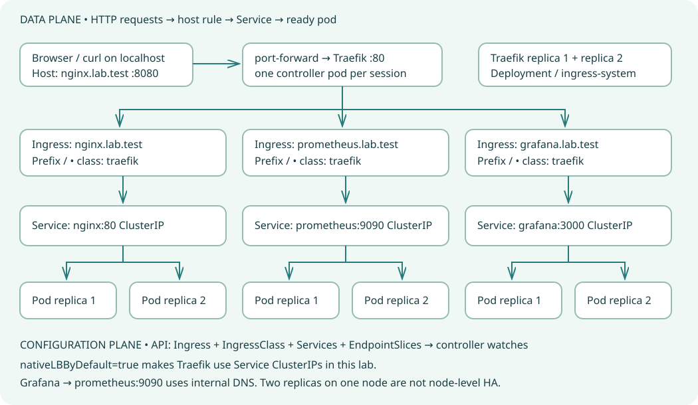

Your traffic map

Solid arrows show the request path. Ingress rules configure the controller; they are not separate running proxies. Services map to ready endpoints, not a fixed alternating pod sequence.
The retired community ingress-nginx controller is not used. Traefik is the controller; the NGINX web server is an application. All access is local HTTP for learning.
What you will deploy
| Host | Service port | Replicas | Purpose |
|---|
| nginx.lab.test | 80 | 2 | Simple web backend |
| prometheus.lab.test | 9090 | 2 | Independent metric collectors |
| grafana.lab.test | 3000 | 2 | Provisioned metrics explorer |
Repository contents: charts/ contains the three application charts; vendor/ contains the official controller chart; controller-values.yaml configures it; scripts/ deploys, validates, tests and cleans up. Read the actual local test report.
LAB 01Understand the route
An Ingress is a Kubernetes API object containing HTTP host and path routing rules. An ingress controller is the running reverse proxy that watches these objects and handles requests. Creating an Ingress alone does not start a proxy. An IngressClass connects a rule to its controller. Here Traefik handles ingress; NGINX is simply one backend application.
Inspect your tools
kubectl config current-context
kubectl get nodes
helm version --short
Interview checkpoint
Why does an Ingress need a controller?
The API stores desired rules; the controller implements them and forwards HTTP requests.
Service versus Ingress?
A Service gives selected ready pods a stable network endpoint. Ingress adds HTTP host/path routing in front of Services.
Deploy the controller
Use Docker Desktop with Kubernetes enabled and the docker-desktop context. Allow roughly 3 GB free cluster memory and internet access for image pulls. Run commands in PowerShell from this repository. The vendored official Traefik chart is pinned to 42.2.0. The controller has two replicas, ClusterIP exposure, explicit class traefik, access logs, and native Service load balancing. It does not claim the default IngressClass.
Select the local cluster
kubectl config use-context docker-desktop
kubectl get nodes
Install controller
helm upgrade --install lab-ingress ./vendor/traefik-42.2.0.tgz -n ingress-system --create-namespace -f controller-values.yaml --wait --timeout 5m
Check controller
kubectl get deployment,pods,svc -n ingress-system
kubectl get ingressclass traefik
Interview checkpoint
Why two controller replicas?
They demonstrate redundancy, but on this one-node cluster they do not protect against node failure.
Why ClusterIP rather than LoadBalancer?
A localhost port-forward provides a predictable local entry point without depending on Docker Desktop external-IP behavior.
Install three application charts
Each small, readable local chart creates a Deployment with two replicas, one ClusterIP Service, and one networking.k8s.io/v1 Ingress. Grafana and Prometheus also receive ConfigMaps. These are educational charts, not the upstream production charts. Use the individual commands below, or scripts/deploy.ps1 to install everything with error checks.
Install all applications
helm upgrade --install nginx ./charts/nginx -n ingress-lab --create-namespace --wait --timeout 5m
helm upgrade --install prometheus ./charts/prometheus -n ingress-lab --wait --timeout 5m
helm upgrade --install grafana ./charts/grafana -n ingress-lab --wait --timeout 5m
Inspect the rendered resources
helm template nginx ./charts/nginx -n ingress-lab
kubectl get deployments,pods,svc,ingress -n ingress-lab
kubectl get endpointslices -n ingress-lab
Interview checkpoint
How does a Service select pods?
Its selector matches pod labels; EndpointSlices contain the corresponding ready pod addresses.
Does two Prometheus replicas mean shared HA storage?
No. Each replica scrapes independently and stores its own temporary data. Requests may hit either replica; this is a routing lab, not a production HA monitoring design.
How does Grafana reach Prometheus?
The provisioned datasource uses http://prometheus:9090 inside the namespace, not the external ingress hostname.
Send traffic through ingress
In terminal A, keep the port-forward running. It binds only to localhost and selects one controller pod for this session. In terminal B, send requests with a Host header. No hosts-file changes are needed for curl. Expect HTTP 200 for all three apps and HTTP 404 for an unknown hostname.
Terminal A — keep running
kubectl port-forward -n ingress-system svc/lab-ingress-traefik 8080:80 --address 127.0.0.1
Terminal B — test all routes
curl.exe -i -H "Host: nginx.lab.test" http://127.0.0.1:8080/
curl.exe -i -H "Host: prometheus.lab.test" http://127.0.0.1:8080/-/ready
curl.exe -i -H "Host: grafana.lab.test" http://127.0.0.1:8080/api/health
curl.exe -i -H "Host: missing.lab.test" http://127.0.0.1:8080/
Automated checks
powershell -ExecutionPolicy Bypass -File scripts/validate.ps1
powershell -ExecutionPolicy Bypass -File scripts/smoke-test.ps1
Interview checkpoint
Why does localhost alone return 404?
The HTTP Host header is localhost, which matches none of the three configured host rules.
Does port-forward balance across controller replicas?
No. One port-forward session selects one controller pod. Backend Services still select ready application endpoints; connection reuse can prevent strict alternation.
Open the UIs and observe
For browser access, add the following line to the Windows hosts file at C:\Windows\System32\drivers\etc\hosts using an elevated editor, then open the links below while port-forward runs. Browser URLs include port 8080. Grafana permits anonymous Viewer access for this local lab; its Prometheus datasource is already provisioned. Prometheus exposes self metrics and Grafana metrics; stock NGINX does not expose Prometheus metrics.
Hosts file entry
127.0.0.1 nginx.lab.test prometheus.lab.test grafana.lab.test
Follow the route
kubectl describe ingress nginx -n ingress-lab
kubectl get svc nginx -n ingress-lab -o wide
kubectl get endpointslices -n ingress-lab -l kubernetes.io/service-name=nginx -o wide
kubectl logs -n ingress-system -l app.kubernetes.io/name=traefik --tail=25 --prefix
Inspect monitoring
curl.exe -H "Host: prometheus.lab.test" "http://127.0.0.1:8080/api/v1/query?query=up"
Open: NGINX · Prometheus · Grafana Explore. Select Prometheus and query up. Wait about 30 seconds for initial scrapes.
Interview checkpoint
What does up equal to 1 mean?
Prometheus successfully scraped that target at its last scrape. It does not prove every app or ingress route is healthy.
Why host routing?
Each app keeps its root URL and redirects. Path prefixes would require app base-path configuration or controller-specific rewrites.
Watch recovery and troubleshoot
Delete one NGINX pod using the command below, then watch the Deployment create a replacement. Inspect readiness and EndpointSlices. A fresh request should continue via a ready endpoint, but a single in-flight request can fail during termination; this is not a zero-downtime guarantee. The two pods share one Docker Desktop node.
Replace one pod
$pod = kubectl get pod -n ingress-lab -l app=nginx -o jsonpath='{.items[0].metadata.name}'
kubectl delete pod $pod -n ingress-lab
kubectl rollout status deployment/nginx -n ingress-lab --timeout=120s
kubectl get pods -n ingress-lab -l app=nginx
Find a failure
kubectl get events -n ingress-lab --sort-by=.lastTimestamp
kubectl describe pods -n ingress-lab
kubectl logs deployment/prometheus -n ingress-lab --tail=30
Interview checkpoint
404 versus 503?
404 usually means no matching router/host/path. 503 often means a matched backend has no usable endpoints. Inspect controller logs and EndpointSlices to establish the cause.
Pending or ImagePullBackOff?
Pending often indicates scheduling or resource constraints. ImagePullBackOff means the runtime cannot pull the image; inspect events, registry connectivity, and image tags.
Clean up and publish
This lab uses emptyDir storage: pod replacement loses that pod’s Prometheus history and Grafana runtime state. Anonymous Grafana and unauthenticated Prometheus are suitable only for the localhost exercise. Production needs authentication, TLS, durable storage and a real monitoring HA design. Stop port-forward with Ctrl+C. Cleanup uninstalls only this lab’s four releases and retains namespaces.
Remove lab releases
powershell -ExecutionPolicy Bypass -File scripts/cleanup.ps1
Create the local Git repository
git init -b main
git add .
git commit -m "Add tested Kubernetes ingress learning lab"
Upload to your own empty GitHub repository
git remote add origin https://github.com/YOUR-USERNAME/ingress-lab.git
git push -u origin main
Interview checkpoint
How would TLS be added?
Use a TLS Secret and spec.tls host configuration, or a certificate manager, and expose an HTTPS entry point with trusted certificates.
Ingress versus Gateway API?
Ingress remains usable but its API is frozen. Gateway API offers more expressive routing and role separation; support depends on the chosen controller.
Explore every chart file
Expand a file to inspect and copy the exact repository source. Change values.yaml, then repeat helm upgrade --install to apply your change.
controller-values.yaml
deployment:
replicas: 2
providers:
kubernetesCRD:
enabled: false
kubernetesIngress:
enabled: true
nativeLBByDefault: true
publishedService:
enabled: false
kubernetesGateway:
enabled: false
service:
type: ClusterIP
ingressClass:
name: traefik
isDefaultClass: false
additionalArguments:
- "--accesslog=true"
charts/grafana/Chart.yaml
apiVersion: v2
name: grafana
description: Educational two-replica grafana deployment
type: application
version: 1.0.0
appVersion: "12.1.0"
charts/grafana/templates/configmap.yaml
apiVersion: v1
kind: ConfigMap
metadata:
name: grafana-datasource
data:
datasource.yaml: |
apiVersion: 1
datasources:
- name: Prometheus
uid: prometheus
type: prometheus
access: proxy
url: http://prometheus:9090
isDefault: true
editable: false
charts/grafana/templates/deployment.yaml
apiVersion: apps/v1
kind: Deployment
metadata:
name: grafana
spec:
replicas: {{ .Values.replicaCount }}
selector:
matchLabels: {app: grafana}
template:
metadata:
labels: {app: grafana}
spec:
containers:
- name: grafana
image: {{ .Values.image | quote }}
ports:
- {name: http, containerPort: 3000}
readinessProbe:
httpGet: {path: /api/health, port: http}
initialDelaySeconds: 5
livenessProbe:
httpGet: {path: /api/health, port: http}
initialDelaySeconds: 30
resources:
{{- toYaml .Values.resources | nindent 12 }}
env:
- {name: GF_AUTH_ANONYMOUS_ENABLED, value: "true"}
- {name: GF_AUTH_ANONYMOUS_ORG_ROLE, value: Viewer}
- {name: GF_AUTH_DISABLE_LOGIN_FORM, value: "true"}
- {name: GF_METRICS_ENABLED, value: "true"}
volumeMounts:
- {name: provisioning, mountPath: /etc/grafana/provisioning/datasources}
- {name: data, mountPath: /var/lib/grafana}
securityContext:
fsGroup: 472
volumes:
- name: provisioning
configMap: {name: grafana-datasource}
- name: data
emptyDir: {}
charts/grafana/templates/ingress.yaml
{{- if .Values.ingress.enabled }}
apiVersion: networking.k8s.io/v1
kind: Ingress
metadata:
name: grafana
spec:
ingressClassName: {{ .Values.ingress.className }}
rules:
- host: {{ .Values.ingress.host | quote }}
http:
paths:
- path: /
pathType: Prefix
backend:
service:
name: grafana
port:
number: {{ .Values.service.port }}
{{- end }}
charts/grafana/templates/service.yaml
apiVersion: v1
kind: Service
metadata:
name: grafana
spec:
type: ClusterIP
selector: {app: grafana}
ports:
- name: http
port: {{ .Values.service.port }}
targetPort: http
charts/grafana/values.yaml
replicaCount: 2
image: "grafana/grafana:12.1.0"
service:
port: 3000
ingress:
enabled: true
className: traefik
host: grafana.lab.test
resources:
requests:
cpu: 50m
memory: 64Mi
limits:
cpu: 500m
memory: 512Mi
charts/nginx/Chart.yaml
apiVersion: v2
name: nginx
description: Educational two-replica nginx deployment
type: application
version: 1.0.0
appVersion: "1.28.0-alpine"
charts/nginx/templates/deployment.yaml
apiVersion: apps/v1
kind: Deployment
metadata:
name: nginx
spec:
replicas: {{ .Values.replicaCount }}
selector:
matchLabels: {app: nginx}
template:
metadata:
labels: {app: nginx}
spec:
containers:
- name: nginx
image: {{ .Values.image | quote }}
ports:
- {name: http, containerPort: 80}
readinessProbe:
httpGet: {path: /, port: http}
initialDelaySeconds: 5
livenessProbe:
httpGet: {path: /, port: http}
initialDelaySeconds: 30
resources:
{{- toYaml .Values.resources | nindent 12 }}
charts/nginx/templates/ingress.yaml
{{- if .Values.ingress.enabled }}
apiVersion: networking.k8s.io/v1
kind: Ingress
metadata:
name: nginx
spec:
ingressClassName: {{ .Values.ingress.className }}
rules:
- host: {{ .Values.ingress.host | quote }}
http:
paths:
- path: /
pathType: Prefix
backend:
service:
name: nginx
port:
number: {{ .Values.service.port }}
{{- end }}
charts/nginx/templates/service.yaml
apiVersion: v1
kind: Service
metadata:
name: nginx
spec:
type: ClusterIP
selector: {app: nginx}
ports:
- name: http
port: {{ .Values.service.port }}
targetPort: http
charts/nginx/values.yaml
replicaCount: 2
image: "nginx:1.28.0-alpine"
service:
port: 80
ingress:
enabled: true
className: traefik
host: nginx.lab.test
resources:
requests:
cpu: 50m
memory: 64Mi
limits:
cpu: 500m
memory: 512Mi
charts/prometheus/Chart.yaml
apiVersion: v2
name: prometheus
description: Educational two-replica prometheus deployment
type: application
version: 1.0.0
appVersion: "v3.5.0"
charts/prometheus/templates/configmap.yaml
apiVersion: v1
kind: ConfigMap
metadata:
name: prometheus-config
data:
prometheus.yml: |
global:
scrape_interval: 15s
scrape_configs:
- job_name: prometheus
static_configs:
- targets: ['localhost:9090']
- job_name: grafana
static_configs:
- targets: ['grafana:3000']
charts/prometheus/templates/deployment.yaml
apiVersion: apps/v1
kind: Deployment
metadata:
name: prometheus
spec:
replicas: {{ .Values.replicaCount }}
selector:
matchLabels: {app: prometheus}
template:
metadata:
labels: {app: prometheus}
spec:
containers:
- name: prometheus
image: {{ .Values.image | quote }}
ports:
- {name: http, containerPort: 9090}
readinessProbe:
httpGet: {path: /-/ready, port: http}
initialDelaySeconds: 5
livenessProbe:
httpGet: {path: /-/ready, port: http}
initialDelaySeconds: 30
resources:
{{- toYaml .Values.resources | nindent 12 }}
args: ["--config.file=/etc/prometheus/prometheus.yml", "--storage.tsdb.path=/prometheus", "--storage.tsdb.retention.time=1h"]
volumeMounts:
- {name: config, mountPath: /etc/prometheus}
- {name: data, mountPath: /prometheus}
volumes:
- name: config
configMap: {name: prometheus-config}
- name: data
emptyDir: {}
charts/prometheus/templates/ingress.yaml
{{- if .Values.ingress.enabled }}
apiVersion: networking.k8s.io/v1
kind: Ingress
metadata:
name: prometheus
spec:
ingressClassName: {{ .Values.ingress.className }}
rules:
- host: {{ .Values.ingress.host | quote }}
http:
paths:
- path: /
pathType: Prefix
backend:
service:
name: prometheus
port:
number: {{ .Values.service.port }}
{{- end }}
charts/prometheus/templates/service.yaml
apiVersion: v1
kind: Service
metadata:
name: prometheus
spec:
type: ClusterIP
selector: {app: prometheus}
ports:
- name: http
port: {{ .Values.service.port }}
targetPort: http
charts/prometheus/values.yaml
replicaCount: 2
image: "prom/prometheus:v3.5.0"
service:
port: 9090
ingress:
enabled: true
className: traefik
host: prometheus.lab.test
resources:
requests:
cpu: 50m
memory: 64Mi
limits:
cpu: 500m
memory: 512Mi